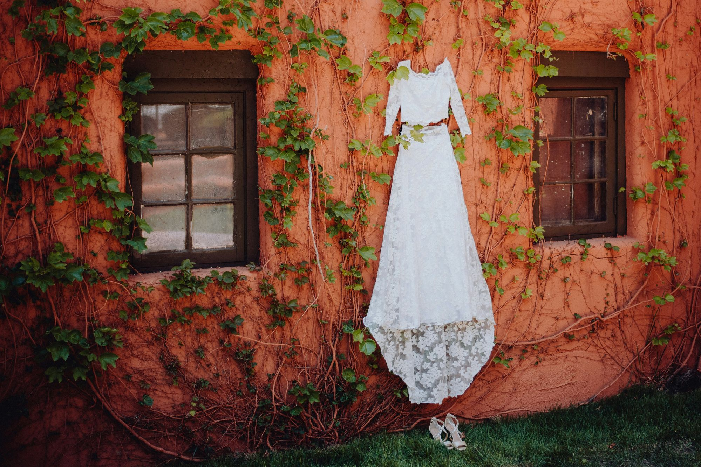

Liefdesverhaal, oprecht verteld
Binnenkort zeggen we ja.
“Ik verkoop geen ‘dienst’, ik verkoop rust. Als Anouk erbij is, komt het goed.”
De website is in de maak. Alvast kennismaken?
info@jametanouk.nl

Liefdesverhaal, oprecht verteld
“Ik verkoop geen ‘dienst’, ik verkoop rust. Als Anouk erbij is, komt het goed.”